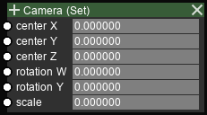

Scene I/O Nodes¶
Set Camera¶
Input sockets
Name |
Type |
Shape |
Description |
|---|---|---|---|
Center X |
double |
- |
X coordinate of axis |
Center Y |
double |
- |
Y coordinate of axis |
Center Z |
double |
- |
Z coordinate of axis |
Rotation W |
double |
- |
Horizontal rotation in degrees (0~360) |
Rotation Y |
double |
- |
Vertical rotation in degrees (-90~90) |
Scale |
double |
- |
Magnification (image is enlarged 2^scale times) |